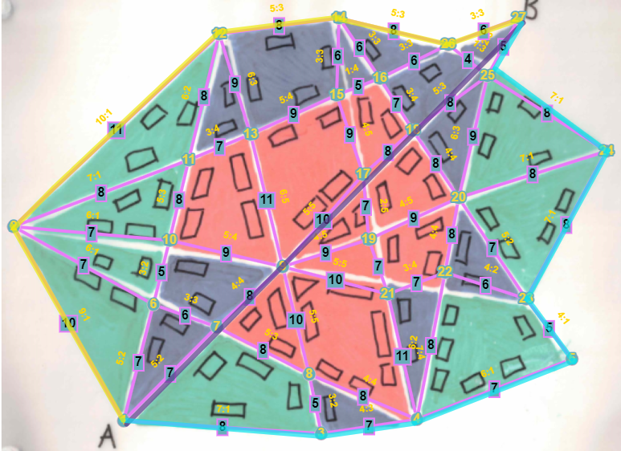

When designing an algorithm for self-driving cars it is important to consider an ethical framework. Selecting the right ethical framework will provide an optimal route which can guarantee both speed and safety. The ethical framework that I have chosen is the utilitarianism framework.
Utilitarianism
Is an ethical framework whose fundamental principle is the "greatest happiness principle." This principle states that the right action is the one that maximises utility. Utility is defined as the sum of all the happiness that results from an action, minus the suffering of anyone involved in the action.
The reason that I have chosen this framework is because it is the most logical framework. It is the framework that will result in the most happiness for the most people. By utilising utilitarianism, we can assign a numerical value to each edge in the graph, which will represent the risk involved in taking that traversal. The scale will be from 1 to 5, with 1 being the safest and 5 being the most dangerous. Hence, by performing an algorithm such as Dijkstra's algorithm, we can find the optimal route that will result in the most happiness for the majority.
Town One
Node 3 is the starting point A and node 30 is the end point B.
The Algorithm
The algorithm will describe how to create the graph and add the weights.
As well as how to find the shortest, safest and optimal route in a given town using Dijkstra's shortest path finding algorithm.
Create the graph
At each junction (where the road crosses with another) place a node and assign a number.
Connect each of these nodes with an edge, these should represent the road.
Draw the graph.
Create the first weight representing the distance:
Assign the value 10 to the longest edge, this will be our reference.
Compare each edge to the reference edge and assign a corresponding weight from the range 1 to 10.
Repeat step b for each edge.
Create the second weight representing the risk:
Identify the colours surrounding the edge.
If green/green and white assign the weight 1.
If green and blue assign the weight 2.
If blue/blue and white or green and red assign the weight 3.
If blue and red assign the weight 4.
If red/red and white assign the weight 5.
Repeat for each edge.
Creating the optimal weights to find the shortest distance it is easier to use one weight than multiple.
Combine the distance and risk weights by adding them together.
Repeat for each edge.
Use Dijkstra's algorithm to find the shortest path balancing both distance and risk.
The algorithm will use the optimal weights to find the shortest path.
Once complete, traverse the graph to the starting point A using the table.
(Optional) Add the distance weight to the total distance weight.
(Optional) Add the risk weight to the total risk weight.
The optimal route has now been found.
Dijkstra's algorithm
The steps of Dijkstra's algorithm as it is being used by the main algorithm.
Mark all nodes as unvisited.
Assign to all nodes a tentative distance value that will change over time.
For the current node calculate the distance to all unvisited neighbors.
Update the shortest distance, if the new distance is shorter than the old distance.
Mark the current node as visited
Choose a new current node from unvisited nodes with the smallest distance.
Repeat till all nodes have been visited.
Town Two

Node 1 is the starting point A and node 27 is the end point B.
Generalisability
As shown by the images, towns one and two both show
their own optimised paths found by the algorithm. This
algorithm can be used in any town as long as it follows
the same rules as the two towns shown. The rules are as
follows: has three different colours (green, blue, and red),
has a starting point and an endpoint, has a path between
each node and has no dead ends. As shown in the example on
The right is a town, which I created to show that the
algorithm can be used in any town.
Developing a Custom Algorithm for Optimising Routes Based on Ethical Principles for Self-Driving Cars
Town Three
Map of Town 3
Step 1
Step 2
Step 3
Step 4
Step 5
Node 1 is the starting point A and node 23 is the end point B.
Conclusion
By using utilitarianism, I have developed an algorithm that will create a graph from a town. Creates the distance weightings and the risk weightings. Then it combines these two weights into another weight. By using Dijkstra's algorithm to find the shortest path with the combined weight. It will output the fastest and safest path for the self-driving car to drive down.